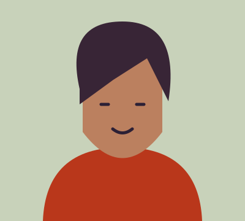
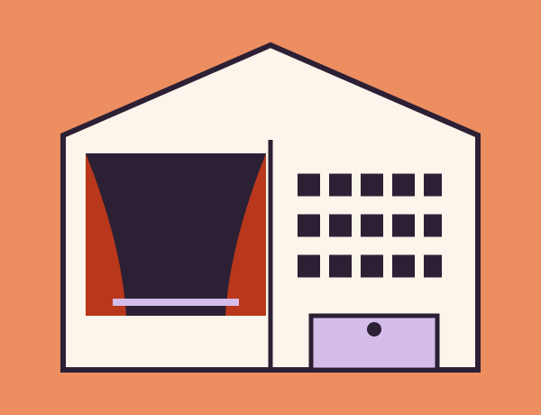
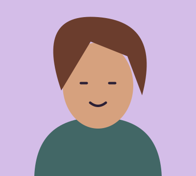
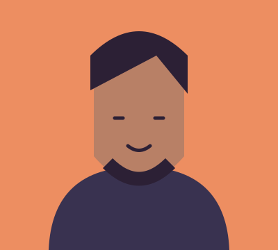

Artistic director
Catriona Henshaw
Catriona shapes the programme and directs work made in our rooms. She is interested in big questions told through small, surprising moments.
06 / Our theatre
Cuefold is a small, independent theatre in Bridgnorth’s old assembly rooms. We believe a room full of people sharing a story is still a fairly remarkable thing.

A room with a new chapter
Our building has held dances, meetings, arguments and celebrations. We’ve kept the proportions, opened up the ground floor and given it a stage close enough to see a performer take a breath.
The programme mixes work made here with visiting performances that deserve a closer look. Some nights are funny. Some are challenging. All of them begin with the same question: what might happen if we pay attention?
Look inside the programmeThe people who open the doors

Artistic director
Catriona shapes the programme and directs work made in our rooms. She is interested in big questions told through small, surprising moments.

Audience & access
Melisande looks after the welcome, from your first question to your journey home. She works with audiences to make practical improvements that last.

Production & participation
Anselm makes things work on stage and brings people into the making. He runs our object-theatre sessions and has a healthy respect for a well-labelled cable.
We leave space in the programme for first-time visitors and for work that doesn’t fit a neat description. Curiosity is a good enough reason to come.
Clear information, fairly priced tickets and a calm welcome matter. We listen to what makes a difference, and tell you honestly what we can offer.
Local people take part as audiences, volunteers, makers and partners. A small theatre is strongest when the town can recognise itself in the room.